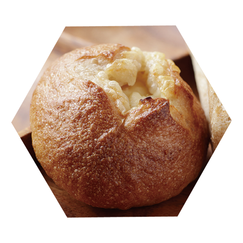
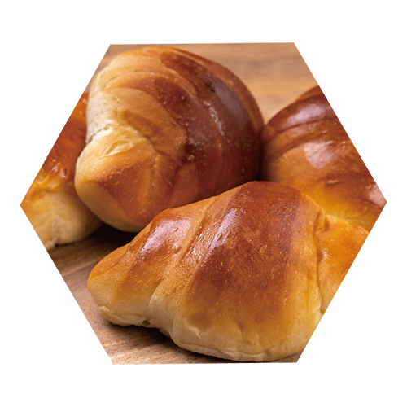
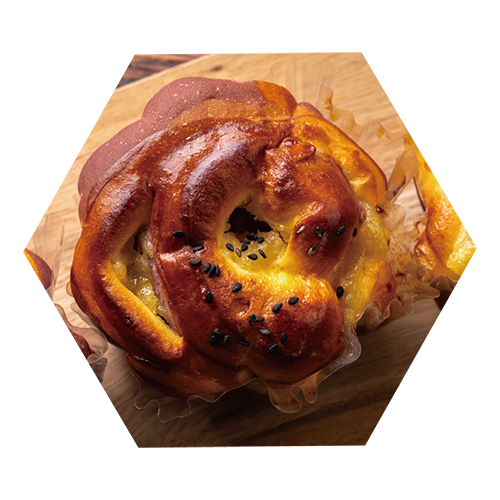
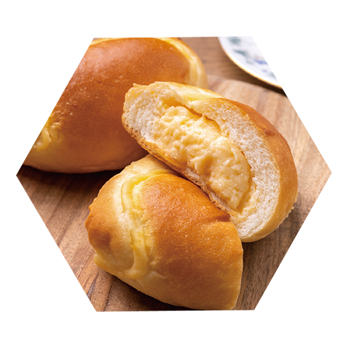
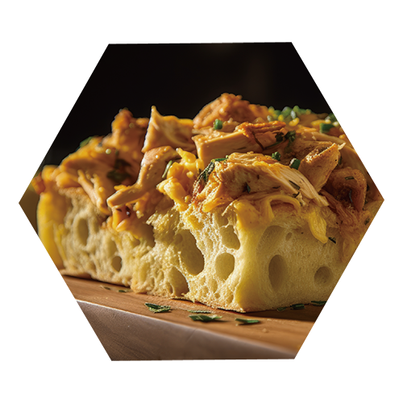
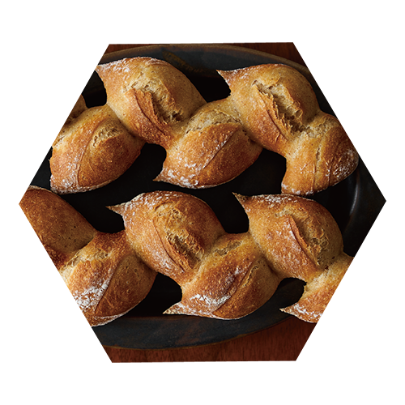
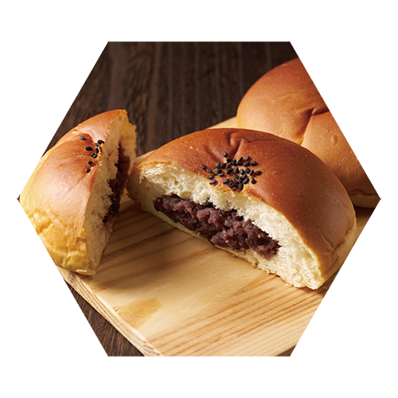
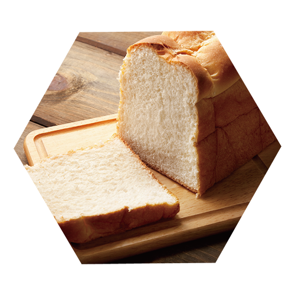
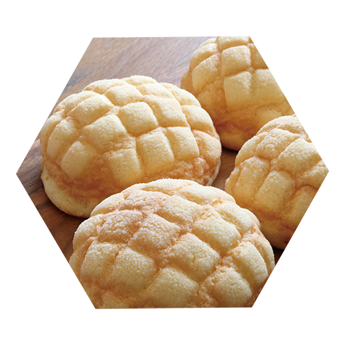

パンの紹介
甘露醬油
上品な甘さと香ばしさ

甘露醬油の焼きチーズパン
柳井の甘露醤油を生地とチーズにあわせ、
香ばしく焼き上げました。
ほんのり香る醤油の香りとチーズのコクが◎

甘露醬油のバターロール
ほんのりと甘みのある生地に、
柳井の甘露醬油を合わせました。
噛むほどにやさしい香ばしさが広がります。

甘露香るみたらしブリオッシュ
ふんわりとした生地に、
甘露醬油を使ったみたらし風のたれを合わせた
和菓子のようなブリオッシュ
山口の恵み
地元の食材を味わう

夏みかんクリームパン
山口県産の夏みかんをつかった
爽やかな香りのクリームパンです。
やさしい甘さのクリームにほのかな酸味が◎

長州ぢどりの照り焼きフォカッチャ
山口県産の長州ぢどりを使った
食べ応えのある惣菜パンです。
甘辛い味付けと、もっちりとした生地が◎

岩国れんこんのきんぴらエピ
シャキシャキ食感の岩国れんこんを使った
和風の惣菜パンです。
噛むほどに香ばしさが広がります。
白壁の定番
昔ながらの定番

山口地酒の酒粕あんぱん
山口県の酒造の酒粕を生地に練りこみ、
ふんわり香るあんぱんに仕上げました。

はちみつとゆずの白壁ブレッド
山口県産のゆずとはちみつを使った
やさしい甘みの食パンです。

白壁メロンパン
外はさっくり、中はふんわり。
どこかなつかしい味わいの定番のメロンパン◎